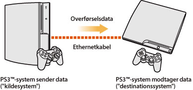
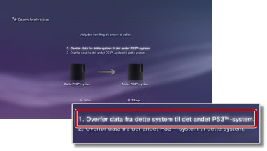
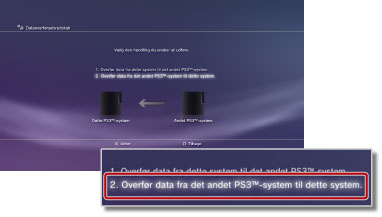

Indstillinger > Systemindstillinger > Dataoverførselsredskab
Dataoverførselsredskab
Du kan nu overføre (kopiere eller flytte) data, som er gemt på et PS3™-systems harddisk, til et andet PS3™-systems harddisk ved hjælp af et Ethernetkabel.

Vigtigt
- Når du udfører denne handling, vil alle data, som er gemt på det PS3™-system, som skal modtage dataene ("destinationssystem"), blive slettet.
- Slettede data kan ikke gendannes, så vær forsigtig med ikke at slette vigtige data. Brugeren er selv ansvarlig for tab af data eller beskadigelse af data.
- Nogle typer data kan muligvis ikke overføres. Flere oplysninger findes her.
Klargøring af systemerne til overførsel af data
Før du begynder at overføre data, skal du udføre følgende trin.
1. |
Opdater begge PS3™-systemers systemsoftware til den nyeste version. |
|---|---|
2. |
Klargør PS3™-systemet, som skal sende dataene ("kildesystemet"). |
- Opret en PlayStation®Network-konto, hvis en bruger ikke har nogen konto.
- - Vælg
 (PlayStation®Network) >
(PlayStation®Network) >  (Registrer dig til PlayStation®Network), og følg så vejledningerne på skærmen for at oprette en konto.
(Registrer dig til PlayStation®Network), og følg så vejledningerne på skærmen for at oprette en konto. - Deaktiver PS3™-systemet, hvis dataene, som skal overføres, omfatter indhold, som er købt hos PlayStation®Store.
- - Vælg (PlayStation®Network) >
 (Kontohåndtering) >
(Kontohåndtering) >  (System Activation).
(System Activation). - Du kan sikkerhedskopiere eller "synkronisere" Trophy-oplysninger på PS3™-systemet med PlayStation®Network-serveren, hvis du vil overføre Trophy-oplysninger.
- - Log dig ind på PlayStation®Network, og vælg så
 (Spil) >
(Spil) >  (Trophy Collection).
(Trophy Collection). - Meld dig til
 (PlayStation®Home), før du overfører data, hvis du har opnået belønningspunkter til brug i (PlayStation®Home) på kildesystemet.
(PlayStation®Home), før du overfører data, hvis du har opnået belønningspunkter til brug i (PlayStation®Home) på kildesystemet. - Lav en sikkerhedskopi af dine profiloplysninger og trinnene, som du oprettede i LittleBigPlanet™, for dit gemte spil. Så kan du bruge dataene, som blev sikkerhedskopieret, når LittleBigPlanet™ afspilles på destinations-PS3™-systemet.
Vigtigt
Følgende begrænsninger gælder, hvis du overfører data uden at oprette en PlayStation®Network-konto:
- Du kan muligvis ikke bruge de gemte data på destinations-PS3™-systemet.
- Du kan muligvis ikke længere optjene Trophies ved hjælp af de gemte data, som du har overført.
- Trophy-oplysninger overføres ikke.
Overførsel af data
Sluk for begge PS3™-systemer, og udfør så følgende trin. Hvis de overførte data er gemte spildata, hvor kopiering er forbudt, eller data, som er ophavsretligt beskyttet, vil de blive flyttet til destinations-PS3™-systemet og slettet fra kilde-PS3™-systemet.
1. |
Lav en direkte forbindelse mellem de to PS3™-systemer med et Ethernetkabel. |
|---|---|
2. |
Tilslut PS3™-systemerne til forskellige videoindgangsstik på tv'et. |
3. |
Tænd tv'et, og tænd derefter PS3™-systemerne. |
4. |
På kilde-PS3™-systemet vælges |
5. |
Vælg [1. Overfør data fra dette system til det andet PS3™-system.].  Hvis du ikke har fuldført klargøringstrinnene, som blev beskrevet tidligere, skal du følge vejledningen på skærmen for at fuldføre disse trin. |
6. |
Hvis PS3™-systemet er på standby, når dataene skal overføres, skal du bruge tv'ets fjernbetjening for at skifte videoindgang, så du ser skærmen på destinations-PS3™-systemet. |
7. |
På destinations-PS3™-systemet vælges |
8. |
Vælg [2. Overfør data fra det andet PS3™-system til dette system.].  Følg vejledningen på skærmen for at fuldføre handlingen. |
 (Indstillinger) >
(Indstillinger) >  (Systemindstillinger) > [Dataoverførselsredskab].
(Systemindstillinger) > [Dataoverførselsredskab].Tips
- Når dataoverførslen er fuldført, kan du slukke for kilde-PS3™-systemet. Indstil tv'et, så du ser skærmen for kilde-PS3™-systemet, og vælg derefter
 (Brugere) >
(Brugere) >  (Sluk system).
(Sluk system). - Hvis indhold, som blev hentet fra PlayStation®Store, blev overført som en del af denne handling, skal du aktivere destinations-PS3™-systemet, før du kan bruge dataene. Log dig på PS3™-systemet som brugeren, som ejer indholdet, og vælg derefter (PlayStation®Network) > (Kontohåndtering) > (System Activation) for at aktivere systemet.
Begrænsninger for dataoverførselsredskabet
Nogle typer data kan ikke overføres ved hjælp af dataoverførselsredskabet, og nogle typer data kan overføres, men kan ikke afspilles på destinations-PS3™-systemet.
De nyeste oplysninger findes på SCE-hjemmesiden for dit område. Følgende datatyper kan ikke overføres:
- Videoindhold, som er hentet som lejet fra PlayStation®Store (filtype: MNV)
- Spor (inklusive "songpacks") for SingStar®-softwaren, som er gemt på PS3™-systemets harddisk
- Ophavsretligt beskyttede videofiler (filtyper: MGV og ETS)
- Videofiler, som er kompatible med ydelsen DivX® VOD (Video On Demand)
Ved følgende datatyper skal du udføre nogle ekstratrin, når du er færdig med at overføre dataene, så du kan bruge dataene:
- Programdata for Life with PlayStation®
- - Download og installer programmet Life with PlayStation® på destinations-PS3™-systemet. Du kan stadig samle belønningspoint til PlayStation®Network-rangsystemet for Folding@home™-kanalen.
- GripShift™
- - Når du første gang starter spillet, efter at dataene er blevet overført, vises en fejlmeddelelse, og du vil ikke kunne spille spillet. Download og installer spillet igen for at spille spillet.
- Gemte data for Ghostbusters™ og Ghostbusters™: Videospillet
- - Det gemte spil genkendes ikke, når du første gang starter spillet, efter at dataene er blevet overført. Afslut spillet og start det igen for at bruge de gemte data.
Tip
Nogle softwaretitler sælges muligvis ikke i nogle regioner.